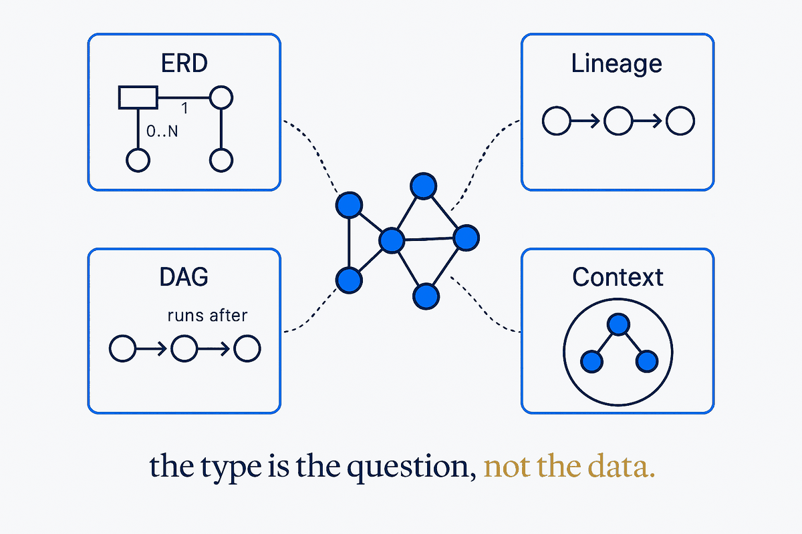

Diagram types

“Diagram” is not one thing. Each type answers a different question, and picking the wrong one is why so many diagrams get ignored. All of these are generated from the same metadata — what changes is which slice of the model is projected, and how.
ERD — entity-relationship diagram
Answers: what things exist, and how are they related? The oldest and most misused type. An ERD of 200 tables is not a diagram, it is wallpaper — the discipline is choosing the subject area first and letting the generator draw only that. Conceptual, logical and physical are three different ERDs of the same reality, and mixing them is the commonest way to lose an audience.
Concepts: Living Diagrams · Business-Friendly Diagramming | Articles: Generating yEd diagrams from metadata
Lineage — where did this come from?
Answers: what feeds this, and what breaks if I change it? Two flavours worth separating: horizontal lineage follows data across systems; vertical lineage follows a single column down through its transformations. Auditors want the first, engineers want the second, and a diagram that tries to be both is usually neither.
Concepts: Business-Friendly Data Lineage · Horizontal vs Vertical Lineage | Articles: Dynamic Metadata Lineage
DAG — the pipeline as a graph
Answers: in what order does work happen, and what depends on what? A DAG is lineage with execution semantics attached — the arrows carry runs after, not just flows into. Generated from orchestration metadata rather than drawn, it becomes the one picture that is true at 3am.
The acyclic part is the constraint that makes it useful: a cycle in a DAG is a bug, and drawing it exposes the bug.
Knowledge graph — things and how they mean
Answers: how do concepts relate across domains? Where an ERD is bounded by a schema, a knowledge graph crosses them — entities, decisions, documents, people, all in one connected structure. Its shape is a triple: source · relationship · target. That is also the shape of a link table, which is why a vault of notes and an enterprise ontology converge on the same architecture.
Concepts: Conceptual Constellations | Research: The visual tool landscape
Context & flow — the picture for people who do not read schemas
Answers: what is this system, and where does it sit? Fewest boxes, most deliberation. A context diagram is almost entirely about what you leave out — which is exactly the human judgement a generator cannot make for you.
Concepts: Generated Palettes · Drawing It Together
One model, several types. The same metadata produces an ERD for the modeller, a lineage graph for the auditor, a DAG for the engineer and a context diagram for the executive. Hand-drawn that is four artifacts drifting apart. Generated, they cannot contradict each other.